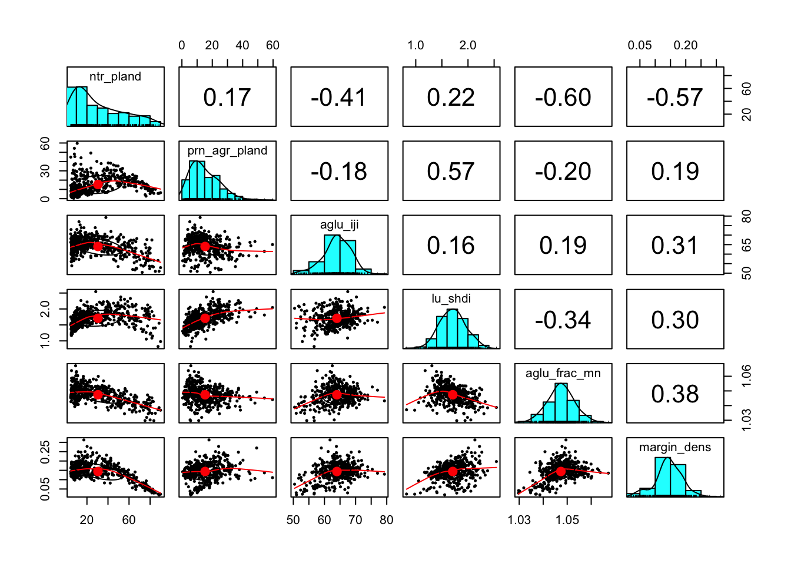
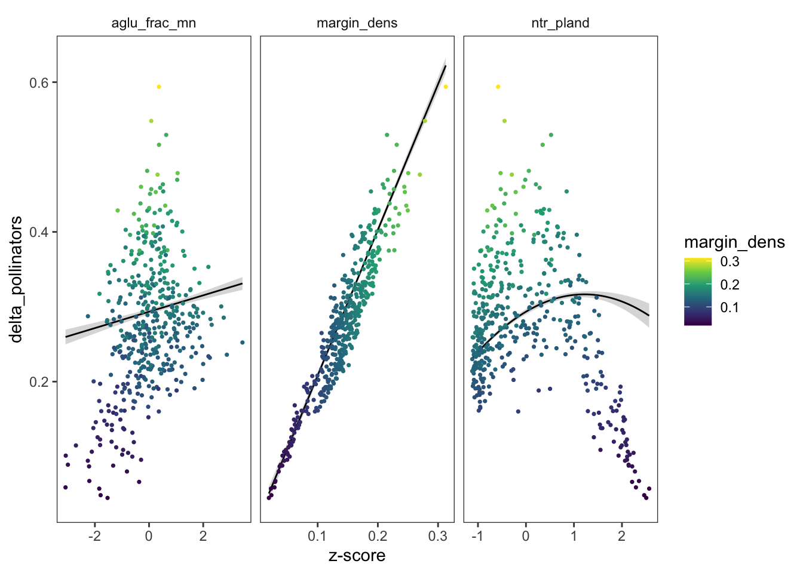
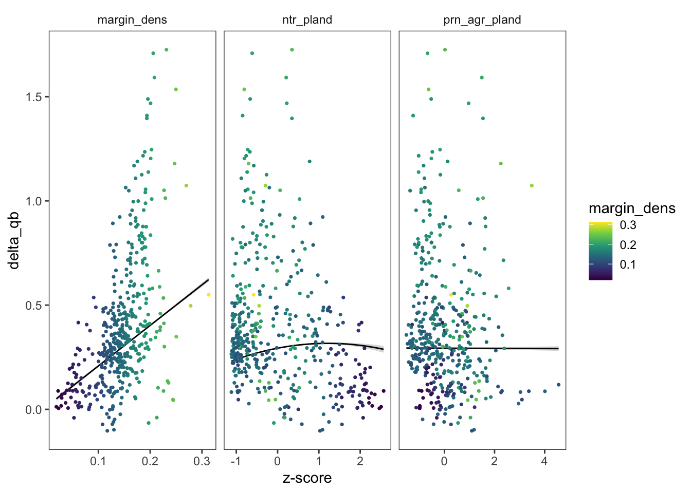
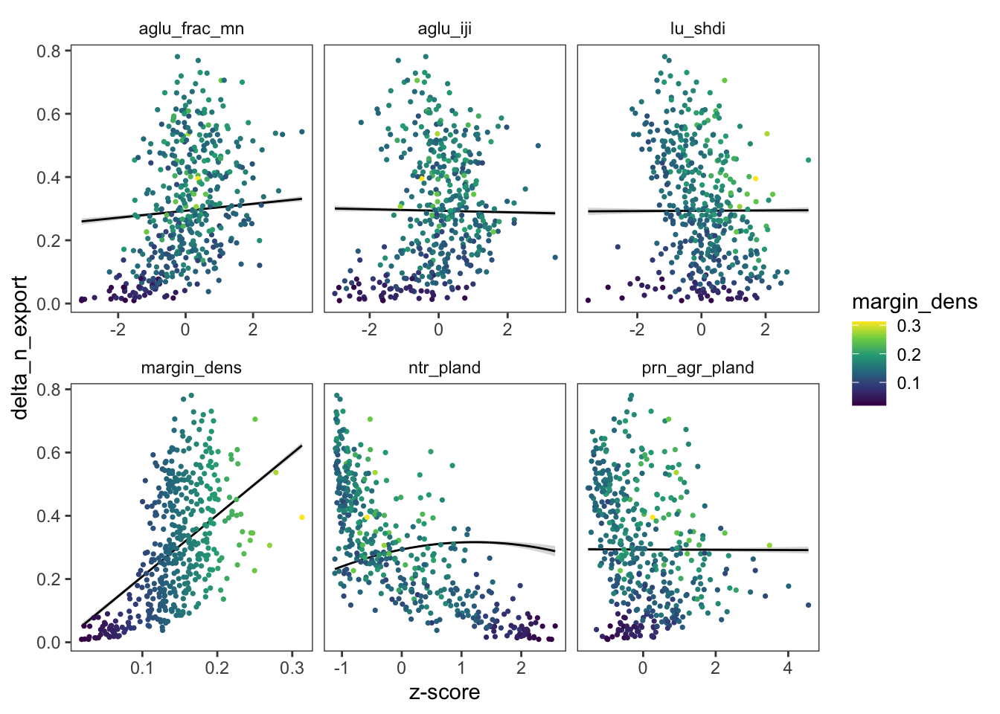
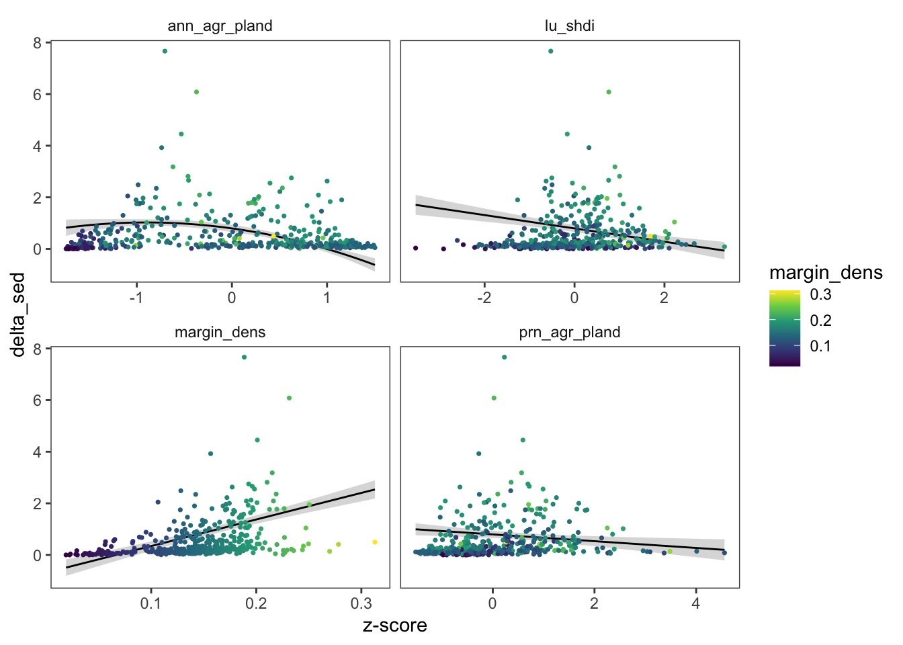
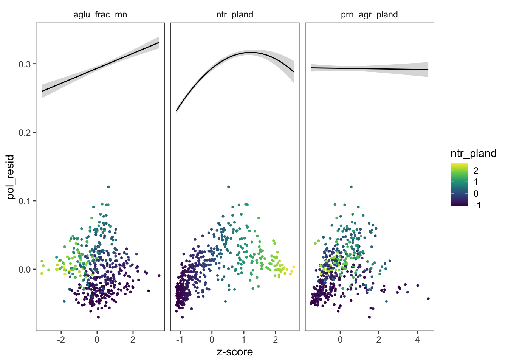
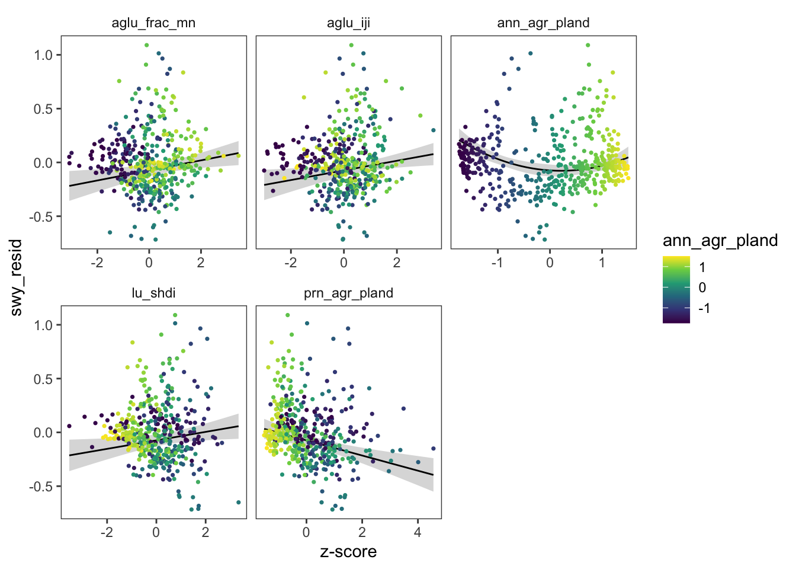
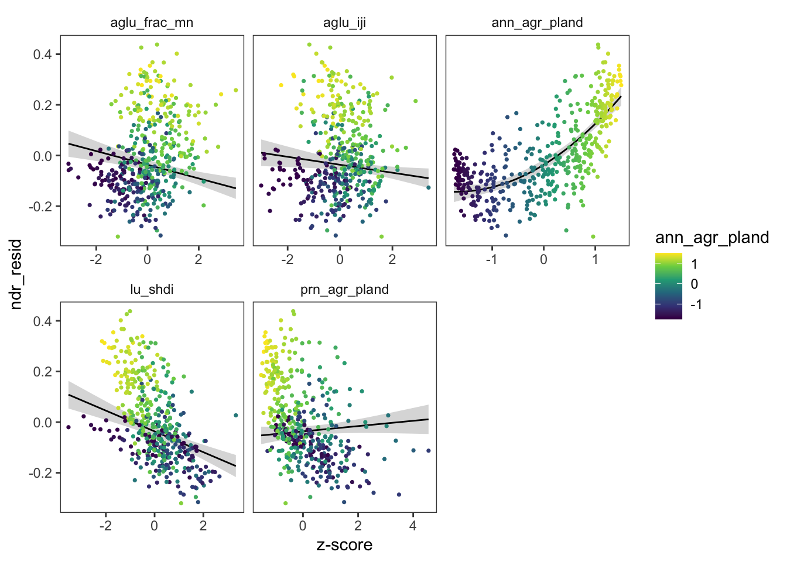
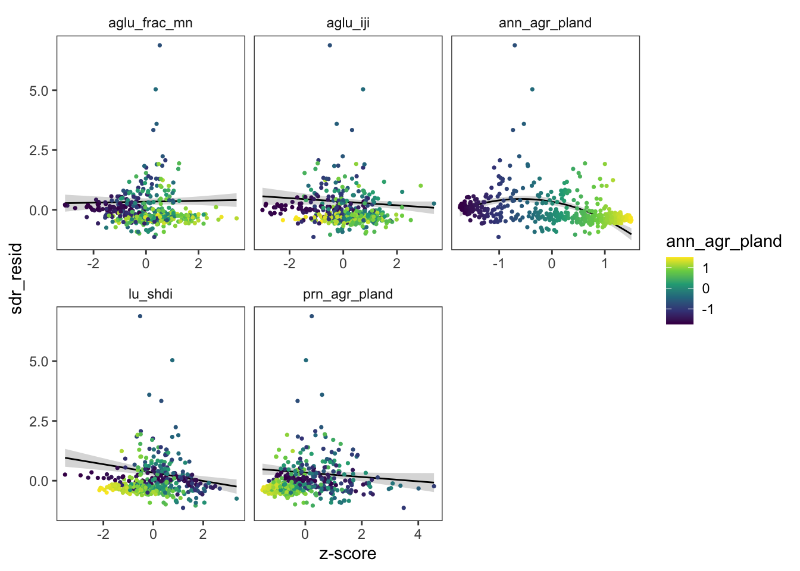

I selected a subset of variables that aren’t strongly correlated and that represent potential drivers of ecosystem service patterns.

pol.dmod0 <- lm(delta_pollinators ~ margin_dens, data = scaled.data)
pol.dmod1 <- lm(delta_pollinators ~ ann_agr_pland + aglu_iji + prn_agr_pland + aglu_frac_mn + margin_dens + lu_shdi, data = scaled.data)
pol.dmod2 <- lm(delta_pollinators ~ ann_agr_pland + I(ann_agr_pland^2) + aglu_iji + prn_agr_pland + aglu_frac_mn + margin_dens + lu_shdi, data = scaled.data)
performance::compare_performance(pol.dmod0, pol.dmod1, pol.dmod2)## # Comparison of Model Performance Indices
##
## Name | Model | AIC (weights) | AICc (weights) | BIC (weights) | R2 | R2 (adj.) | RMSE | Sigma
## -----------------------------------------------------------------------------------------------------------
## pol.dmod0 | lm | -1751.6 (<.001) | -1751.5 (<.001) | -1739.3 (<.001) | 0.869 | 0.868 | 0.032 | 0.032
## pol.dmod1 | lm | -2112.5 (<.001) | -2112.2 (<.001) | -2079.9 (<.001) | 0.944 | 0.943 | 0.021 | 0.021
## pol.dmod2 | lm | -2236.3 (>.999) | -2235.9 (>.999) | -2199.6 (>.999) | 0.958 | 0.957 | 0.018 | 0.019summary(pol.dmod2)##
## Call:
## lm(formula = delta_pollinators ~ ann_agr_pland + I(ann_agr_pland^2) +
## aglu_iji + prn_agr_pland + aglu_frac_mn + margin_dens + lu_shdi,
## data = scaled.data)
##
## Residuals:
## Min 1Q Median 3Q Max
## -0.055041 -0.010748 0.000352 0.011391 0.073010
##
## Coefficients:
## Estimate Std. Error t value Pr(>|t|)
## (Intercept) 0.012311 0.005145 2.393 0.0171 *
## ann_agr_pland -0.040100 0.001669 -24.021 < 2e-16 ***
## I(ann_agr_pland^2) -0.022045 0.001843 -11.964 < 2e-16 ***
## aglu_iji -0.006703 0.001292 -5.189 3.26e-07 ***
## prn_agr_pland -0.017330 0.001376 -12.591 < 2e-16 ***
## aglu_frac_mn 0.010490 0.001289 8.140 4.31e-15 ***
## margin_dens 1.998772 0.030229 66.122 < 2e-16 ***
## lu_shdi 0.000834 0.001406 0.593 0.5534
## ---
## Signif. codes: 0 '***' 0.001 '**' 0.01 '*' 0.05 '.' 0.1 ' ' 1
##
## Residual standard error: 0.01852 on 429 degrees of freedom
## Multiple R-squared: 0.9579, Adjusted R-squared: 0.9572
## F-statistic: 1394 on 7 and 429 DF, p-value: < 2.2e-16
swy.dmod0 <- lm(delta_qb ~ margin_dens, data = scaled.data)
swy.dmod1 <- lm(delta_qb ~ ann_agr_pland + aglu_iji + prn_agr_pland + aglu_frac_mn + margin_dens + lu_shdi, data = scaled.data)
swy.dmod2 <- lm(delta_qb ~ ann_agr_pland + I(ann_agr_pland^2) + aglu_iji + prn_agr_pland + aglu_frac_mn + margin_dens + lu_shdi, data = scaled.data)
performance::compare_performance(swy.dmod0, swy.dmod1, swy.dmod2)## # Comparison of Model Performance Indices
##
## Name | Model | AIC (weights) | AICc (weights) | BIC (weights) | R2 | R2 (adj.) | RMSE | Sigma
## ------------------------------------------------------------------------------------------------------
## swy.dmod0 | lm | 100.8 (<.001) | 100.9 (<.001) | 113.0 (<.001) | 0.275 | 0.273 | 0.270 | 0.270
## swy.dmod1 | lm | 71.4 (0.006) | 71.7 (0.006) | 104.0 (0.042) | 0.338 | 0.328 | 0.258 | 0.260
## swy.dmod2 | lm | 61.1 (0.994) | 61.5 (0.994) | 97.8 (0.957) | 0.356 | 0.346 | 0.254 | 0.257summary(swy.dmod2)##
## Call:
## lm(formula = delta_qb ~ ann_agr_pland + I(ann_agr_pland^2) +
## aglu_iji + prn_agr_pland + aglu_frac_mn + margin_dens + lu_shdi,
## data = scaled.data)
##
## Residuals:
## Min 1Q Median 3Q Max
## -0.70757 -0.15685 -0.02197 0.12295 1.02836
##
## Coefficients:
## Estimate Std. Error t value Pr(>|t|)
## (Intercept) -0.39331 0.07128 -5.518 5.95e-08 ***
## ann_agr_pland -0.06310 0.02313 -2.728 0.006624 **
## I(ann_agr_pland^2) 0.08943 0.02553 3.503 0.000508 ***
## aglu_iji 0.05185 0.01789 2.897 0.003957 **
## prn_agr_pland -0.08123 0.01907 -4.260 2.51e-05 ***
## aglu_frac_mn 0.04083 0.01785 2.287 0.022682 *
## margin_dens 4.82355 0.41880 11.518 < 2e-16 ***
## lu_shdi 0.01695 0.01948 0.870 0.384735
## ---
## Signif. codes: 0 '***' 0.001 '**' 0.01 '*' 0.05 '.' 0.1 ' ' 1
##
## Residual standard error: 0.2566 on 429 degrees of freedom
## Multiple R-squared: 0.356, Adjusted R-squared: 0.3455
## F-statistic: 33.89 on 7 and 429 DF, p-value: < 2.2e-16
ndr.dmod0 <- lm(delta_n_export ~ margin_dens, data = scaled.data)
ndr.dmod1 <- lm(delta_n_export ~ ann_agr_pland + aglu_iji + prn_agr_pland + aglu_frac_mn + margin_dens + lu_shdi, data = scaled.data)
ndr.dmod2 <- lm(delta_n_export ~ ann_agr_pland + I(ann_agr_pland^2) + aglu_iji + prn_agr_pland + aglu_frac_mn + margin_dens + lu_shdi, data = scaled.data)
performance::compare_performance(ndr.dmod0, ndr.dmod1, ndr.dmod2)## # Comparison of Model Performance Indices
##
## Name | Model | AIC (weights) | AICc (weights) | BIC (weights) | R2 | R2 (adj.) | RMSE | Sigma
## --------------------------------------------------------------------------------------------------------
## ndr.dmod0 | lm | -381.0 (<.001) | -381.0 (<.001) | -368.8 (<.001) | 0.305 | 0.304 | 0.155 | 0.156
## ndr.dmod1 | lm | -794.7 (0.016) | -794.4 (0.016) | -762.1 (0.109) | 0.737 | 0.733 | 0.096 | 0.096
## ndr.dmod2 | lm | -803.0 (0.984) | -802.5 (0.984) | -766.3 (0.891) | 0.743 | 0.738 | 0.095 | 0.095summary(ndr.dmod2)##
## Call:
## lm(formula = delta_n_export ~ ann_agr_pland + I(ann_agr_pland^2) +
## aglu_iji + prn_agr_pland + aglu_frac_mn + margin_dens + lu_shdi,
## data = scaled.data)
##
## Residuals:
## Min 1Q Median 3Q Max
## -0.35411 -0.06057 -0.00682 0.04919 0.28146
##
## Coefficients:
## Estimate Std. Error t value Pr(>|t|)
## (Intercept) 0.017215 0.026523 0.649 0.516636
## ann_agr_pland 0.138511 0.008606 16.095 < 2e-16 ***
## I(ann_agr_pland^2) 0.030348 0.009499 3.195 0.001502 **
## aglu_iji -0.018691 0.006659 -2.807 0.005229 **
## prn_agr_pland 0.015016 0.007095 2.116 0.034890 *
## aglu_frac_mn -0.024475 0.006643 -3.684 0.000259 ***
## margin_dens 1.793667 0.155835 11.510 < 2e-16 ***
## lu_shdi -0.031487 0.007248 -4.344 1.75e-05 ***
## ---
## Signif. codes: 0 '***' 0.001 '**' 0.01 '*' 0.05 '.' 0.1 ' ' 1
##
## Residual standard error: 0.09546 on 429 degrees of freedom
## Multiple R-squared: 0.7427, Adjusted R-squared: 0.7385
## F-statistic: 176.9 on 7 and 429 DF, p-value: < 2.2e-16
sdr.dmod0 <- lm(delta_sed ~ margin_dens, data = scaled.data)
sdr.dmod1 <- lm(delta_sed ~ ann_agr_pland + aglu_iji + prn_agr_pland + aglu_frac_mn + margin_dens + lu_shdi, data = scaled.data)
sdr.dmod2 <- lm(delta_sed ~ ann_agr_pland + I(ann_agr_pland^2) + aglu_iji + prn_agr_pland + aglu_frac_mn + margin_dens + lu_shdi, data = scaled.data)
performance::compare_performance(sdr.dmod0, sdr.dmod1, sdr.dmod2)## # Comparison of Model Performance Indices
##
## Name | Model | AIC (weights) | AICc (weights) | BIC (weights) | R2 | R2 (adj.) | RMSE | Sigma
## ------------------------------------------------------------------------------------------------------
## sdr.dmod0 | lm | 953.9 (<.001) | 953.9 (<.001) | 966.1 (<.001) | 0.128 | 0.126 | 0.716 | 0.717
## sdr.dmod1 | lm | 889.8 (<.001) | 890.1 (<.001) | 922.4 (0.001) | 0.264 | 0.254 | 0.658 | 0.663
## sdr.dmod2 | lm | 872.4 (>.999) | 872.8 (>.999) | 909.1 (0.999) | 0.296 | 0.284 | 0.643 | 0.649summary(sdr.dmod2)##
## Call:
## lm(formula = delta_sed ~ ann_agr_pland + I(ann_agr_pland^2) +
## aglu_iji + prn_agr_pland + aglu_frac_mn + margin_dens + lu_shdi,
## data = scaled.data)
##
## Residuals:
## Min 1Q Median 3Q Max
## -1.4703 -0.3365 -0.0442 0.2067 6.0579
##
## Coefficients:
## Estimate Std. Error t value Pr(>|t|)
## (Intercept) -0.685975 0.180352 -3.804 0.000163 ***
## ann_agr_pland -0.512701 0.058518 -8.761 < 2e-16 ***
## I(ann_agr_pland^2) -0.285075 0.064591 -4.414 1.29e-05 ***
## aglu_iji -0.048977 0.045278 -1.082 0.279991
## prn_agr_pland -0.131174 0.048248 -2.719 0.006819 **
## aglu_frac_mn -0.001911 0.045173 -0.042 0.966267
## margin_dens 10.298333 1.059648 9.719 < 2e-16 ***
## lu_shdi -0.258079 0.049287 -5.236 2.57e-07 ***
## ---
## Signif. codes: 0 '***' 0.001 '**' 0.01 '*' 0.05 '.' 0.1 ' ' 1
##
## Residual standard error: 0.6491 on 429 degrees of freedom
## Multiple R-squared: 0.2959, Adjusted R-squared: 0.2844
## F-statistic: 25.76 on 7 and 429 DF, p-value: < 2.2e-16
Since margin density is a major effect, I regress the other predictors against the residuals of univariate models with only margin density
##
## Call:
## lm(formula = pol_resid ~ ann_agr_pland + I(ann_agr_pland^2) +
## prn_agr_pland + aglu_iji + aglu_frac_mn + lu_shdi, data = pol.resid)
##
## Residuals:
## Min 1Q Median 3Q Max
## -0.060244 -0.011029 -0.000722 0.011540 0.081448
##
## Coefficients:
## Estimate Std. Error t value Pr(>|t|)
## (Intercept) 0.024009 0.002061 11.649 < 2e-16 ***
## ann_agr_pland -0.035794 0.001486 -24.084 < 2e-16 ***
## I(ann_agr_pland^2) -0.024064 0.001853 -12.989 < 2e-16 ***
## prn_agr_pland -0.015872 0.001386 -11.451 < 2e-16 ***
## aglu_iji -0.007652 0.001316 -5.816 1.18e-08 ***
## aglu_frac_mn 0.011292 0.001316 8.578 < 2e-16 ***
## lu_shdi 0.003881 0.001312 2.958 0.00327 **
## ---
## Signif. codes: 0 '***' 0.001 '**' 0.01 '*' 0.05 '.' 0.1 ' ' 1
##
## Residual standard error: 0.01906 on 430 degrees of freedom
## Multiple R-squared: 0.6594, Adjusted R-squared: 0.6546
## F-statistic: 138.7 on 6 and 430 DF, p-value: < 2.2e-16
##
## Call:
## lm(formula = swy_resid ~ ann_agr_pland + I(ann_agr_pland^2) +
## prn_agr_pland + aglu_iji + aglu_frac_mn + lu_shdi, data = swy.resid)
##
## Residuals:
## Min 1Q Median 3Q Max
## -0.64690 -0.16467 -0.03551 0.11521 1.06227
##
## Coefficients:
## Estimate Std. Error t value Pr(>|t|)
## (Intercept) -0.07433 0.02796 -2.659 0.008135 **
## ann_agr_pland -0.03128 0.02016 -1.552 0.121509
## I(ann_agr_pland^2) 0.07450 0.02513 2.965 0.003200 **
## prn_agr_pland -0.07046 0.01880 -3.748 0.000203 ***
## aglu_iji 0.04483 0.01785 2.512 0.012359 *
## aglu_frac_mn 0.04676 0.01786 2.619 0.009139 **
## lu_shdi 0.03947 0.01780 2.218 0.027083 *
## ---
## Signif. codes: 0 '***' 0.001 '**' 0.01 '*' 0.05 '.' 0.1 ' ' 1
##
## Residual standard error: 0.2585 on 430 degrees of freedom
## Multiple R-squared: 0.09608, Adjusted R-squared: 0.08347
## F-statistic: 7.618 on 6 and 430 DF, p-value: 8.728e-08
##
## Call:
## lm(formula = ndr_resid ~ ann_agr_pland + I(ann_agr_pland^2) +
## prn_agr_pland + aglu_iji + aglu_frac_mn + lu_shdi, data = ndr.resid)
##
## Residuals:
## Min 1Q Median 3Q Max
## -0.39226 -0.06080 -0.00439 0.05645 0.26216
##
## Coefficients:
## Estimate Std. Error t value Pr(>|t|)
## (Intercept) -0.036574 0.010428 -3.507 0.000501 ***
## ann_agr_pland 0.125059 0.007520 16.631 < 2e-16 ***
## I(ann_agr_pland^2) 0.036657 0.009374 3.910 0.000107 ***
## prn_agr_pland 0.010462 0.007013 1.492 0.136492
## aglu_iji -0.015726 0.006657 -2.362 0.018601 *
## aglu_frac_mn -0.026980 0.006661 -4.051 6.06e-05 ***
## lu_shdi -0.041008 0.006639 -6.177 1.52e-09 ***
## ---
## Signif. codes: 0 '***' 0.001 '**' 0.01 '*' 0.05 '.' 0.1 ' ' 1
##
## Residual standard error: 0.09642 on 430 degrees of freedom
## Multiple R-squared: 0.6212, Adjusted R-squared: 0.6159
## F-statistic: 117.5 on 6 and 430 DF, p-value: < 2.2e-16
##
## Call:
## lm(formula = sdr_resid ~ ann_agr_pland + I(ann_agr_pland^2) +
## prn_agr_pland + aglu_iji + aglu_frac_mn + lu_shdi, data = sdr.resid)
##
## Residuals:
## Min 1Q Median 3Q Max
## -1.0897 -0.3542 -0.0576 0.1666 6.3129
##
## Coefficients:
## Estimate Std. Error t value Pr(>|t|)
## (Intercept) 0.33930 0.07141 4.751 2.76e-06 ***
## ann_agr_pland -0.39543 0.05150 -7.679 1.09e-13 ***
## I(ann_agr_pland^2) -0.34008 0.06419 -5.298 1.88e-07 ***
## prn_agr_pland -0.09147 0.04803 -1.905 0.057499 .
## aglu_iji -0.07482 0.04559 -1.641 0.101469
## aglu_frac_mn 0.01993 0.04561 0.437 0.662343
## lu_shdi -0.17508 0.04547 -3.851 0.000136 ***
## ---
## Signif. codes: 0 '***' 0.001 '**' 0.01 '*' 0.05 '.' 0.1 ' ' 1
##
## Residual standard error: 0.6603 on 430 degrees of freedom
## Multiple R-squared: 0.1625, Adjusted R-squared: 0.1508
## F-statistic: 13.91 on 6 and 430 DF, p-value: 1.786e-14